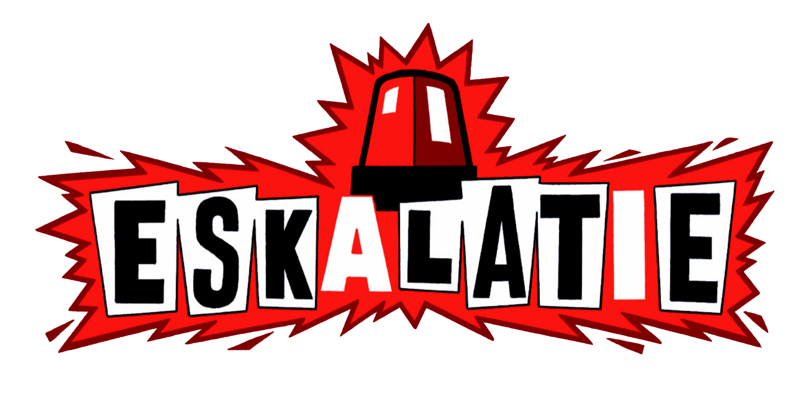

12-koppige skaband uit Haarlemtown
Welkom ieder en allen op de webpagina van Eskalatie! Op deze pagina vindt u alles over de Haarlemse skaband Eskalatie. Misschien dat dat nog wel van pas komt als u meedoet aan een pubquiz over 40 jaar. Vindt u deze pagina nou leuk? Dan kunt u het liken, door naar een van ons toe te komen voor, na of tijdens een optreden en het te benoemen.
Sinds kort hebben wij ook InstagramWil je ons boeken? Dan doet u er goed aan Jaap te mailen op jaap@radar-agency.com.
ESKALATIE: HET DEBUUTALBUM
Begin dit jaar zijn we eens rondom de tafel gaan zitten met de Amsterdamse rock en rollers van Wap Shoo Wap Records, die toch het woord van ska niet konden weerstaan. Daar kwam eerst een mooie single uit: Totale Eskalatie/Bellenblaas machine, maar wat wil nou: op hun website is die helemaal uitverkocht. Dus, wij weer de studio in, heel album opgenomen. Die mocht afgelopen juni dan uitkomen. Maar vanzelfsprekend sloeg het noodlot wederom toe, zodat ook deze plaat in de webshop helemaal uitverkocht is. Maar niet getreurd, wij hebben van zowel de single als het album nog enkele exemplaren over! Zodoende is het nog mogelijk om bij een van onze concerten een plaatje te bemachtigen. En is dat nog niet genoeg, dan hebben we ook nog niet een, maar maar liefst twee nummers met een eigen videoclip. Totale Eskalatie is gefilmd door Gillian, die ook onze lieftallige platenbaas is. En het andere nummer, Vishoed, is gefilmd door Sil, bekend van Sil's Vinylzolder, waar hij van alles en nog wat verteld over bekende en minder bekende plaatjes en de achtergrond eromheen. Allemaal leuk en aardig, maar als u dus nog een plaatje wil, dan doet u er goed aan even te kijken waar we allemaal spelen aankomende tijd. Deze informatie is te vinden achter de link hieronder. Vlak daar nog onder zullen dan ongetwijfeld de videoclips ook nog te vinden zijn.
Downloads
Stel je bent dus een poster aan het maken of je wil een mooi ontwerp voor je bootleg-cassette, dan kan je hier ons logo etc downloaden.